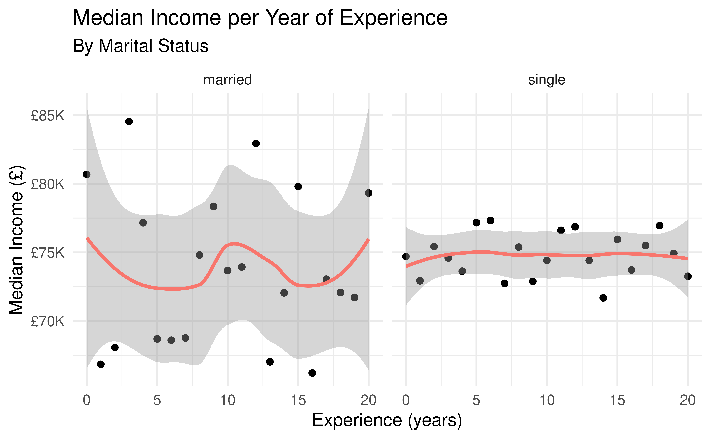
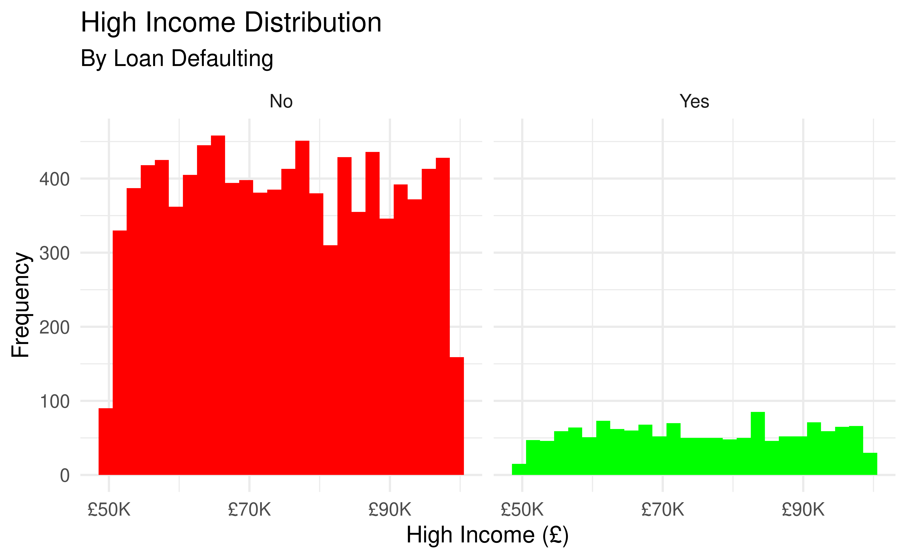

Loan Defaulting Investigation
For Bank Clients In India
Amigos
Orestis Patsalides, Nicolas Georgiades and Iskandar Sawalha
University of Edinburgh
2021-12-01
Introducing our Investigation
How does a person’s situation and current status affect Loan Defaulting?
We will try to assess the above question by examining how Experience, Income and Marital Status affect Loan Defaulting, for bank clients in India.
We will do this by the use of statistical models and graphs.
Introducing our Data
Our data frame shows observations gathered for different individuals in India related to their current status in life and whether they were able to repay a loan or not. All values were provided at the time of the loan application at several banks India.
Here is a glimpse of our data frame
| ID | risk_flag | Income | Age | Experience | Married.Single |
|---|---|---|---|---|---|
| 1 | No | 7393090 | 59 | 19 | single |
| 3 | Yes | 8901342 | 50 | 12 | single |
| 7 | No | 5101498 | 55 | 0 | married |
| 8 | No | 6716946 | 70 | 15 | single |
| 9 | No | 8369802 | 43 | 7 | single |
| 10 | Yes | 9565457 | 65 | 5 | single |
Source: kaggle.com
Does Income really Increase with Experience?

Not Always
From the graph we can see that for married people income generally decreases with experience, whilst for single people it increases.
Focusing on married people, we can see that income starts higher than for single people, as they have 2 salaries combined. There is a steep decrease which can be explained by the fact that possibly the woman stops working after the marriage, as is usually the trend in developing countries with less developed societies. Then, after 7 years of experience, the income starts to rise, due to the fact that the people have more experience, thus are more productive and are rewarded for this. However, after 12 years income starts decreasing again, likely because after a certain age people become fatigued of their job and their productivity decreases and some even retire (a number which increases as the years of experience increase), leading to the effect observed.
For single people, the general trend for the first 15 years is for income to grow with experience. Although, after 15 years people grow bored of their jobs, meaning they become less productive or consider retiring, both results increasing as the years go by, thus a decrease in income is observed.
How does Income affect Loan Defaulting?

Well… it is as expected
In order to be able to investigate the above question we needed to filter our data so that it only consisted of clients earning an income which was higher than the median income. Clients who fell in this category were considered to be earning a high income.
From the graph we can clearly see that the vast majority of high income earners were able to repay their loan, since the frequency representing them was much higher than the one representing those who defaulted on their loan.
As a result, it can be concluded that a person earning a high income (higher than the median income of all clients, for the purpose of this investigation) does affect at a high extent if a client will be able to repay a loan or not.
How does Marrital Status affect this relationship?
Slightly
Generally, from the above faceted graph, we can observe that the number of clients who didn’t defaulted their loan is greater than that of clients who did default despite their marital status. Furthermore, the number of single clients is greater than that of married clients for both defaulted and non-defaulted loans.
Paying greater attention, we can see that married people are more likely to default on a loan. The relative height difference of the bars for married clients who didn’t repay their loan compared to those who did is smaller than the equivalent difference for single clients. In other words, the proportion of married clients who defaulted on a loan was greater than the equivalent proportion for single clients.
As a result, it can be concluded that the marital status of a client (with a higher than the median income of all clients) does affect the probability that he/she will be able to repay a loan or not.
How Accurate is the Model in Predicting future Loan Defaulting
Based on High Income and Marital Status
## # A tibble: 2,801 × 5
## .pred_No .pred_Yes risk_flag Income Married.Single
## <dbl> <dbl> <fct> <int> <chr>
## 1 0.865 0.135 No 9999180 single
## 2 0.865 0.135 Yes 9985581 single
## 3 0.865 0.135 No 9984878 single
## 4 0.865 0.135 No 9984878 single
## 5 0.865 0.135 No 9984878 single
## 6 0.865 0.135 No 9984878 single
## 7 0.865 0.135 No 9984878 single
## 8 0.865 0.135 No 9979065 single
## 9 0.865 0.135 No 9979065 single
## 10 0.865 0.135 No 9978110 single
## # … with 2,791 more rowsGraphical Representation of the Model’s Accuracy
Prediction Threshold
## risk_flag n
## 1 No 9762
## 2 Yes 1441## # A tibble: 1 × 2
## Prediction n
## <dbl> <int>
## 1 0 2801Wrapping Up
By taking a first glimpse at the predictions of our model, everything seems relatively fine. Since most of the predictions over 0.5, indicating a non loan default, were indeed repayed. However, by plotting an ROC curve, the curve was very close to the line y=x. This shows that our model is guessing randomly about future cases.
Upon further investigation, we saw that the threshold of the model for loan defaulting was way below 0.5. This occurs due to the fact that our model begins with the assumption that all clients approved for a loan will be able to repay it or else they wouldn’t have had been approved in the first place. Thus, this shows that our data is imbalanced and there are limitations attached to it which require further more advanced techniques to be resolved.
Conclusion
To answer the initial question, both variables, high income and marital status, affect loan defaulting.
However, our model is unable to accurately predict future cases.

THANKS FOR WATCHING
The conclusion from our investigation is that if you want to get a loan and be able to repay it then
DON’T GET MARRIED